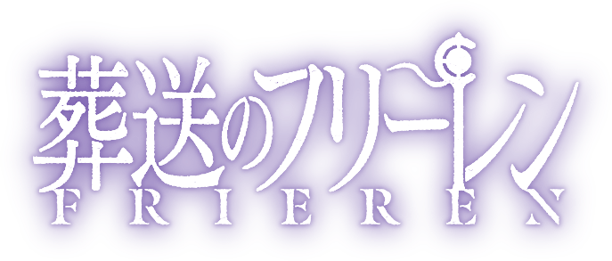
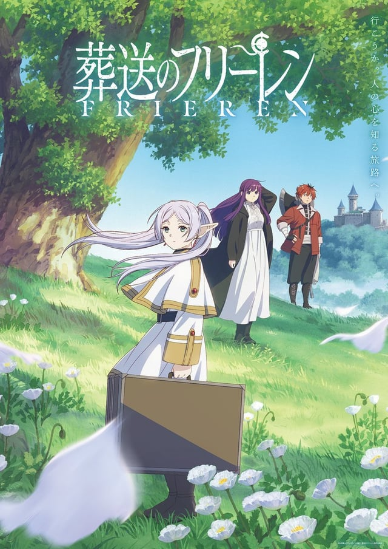
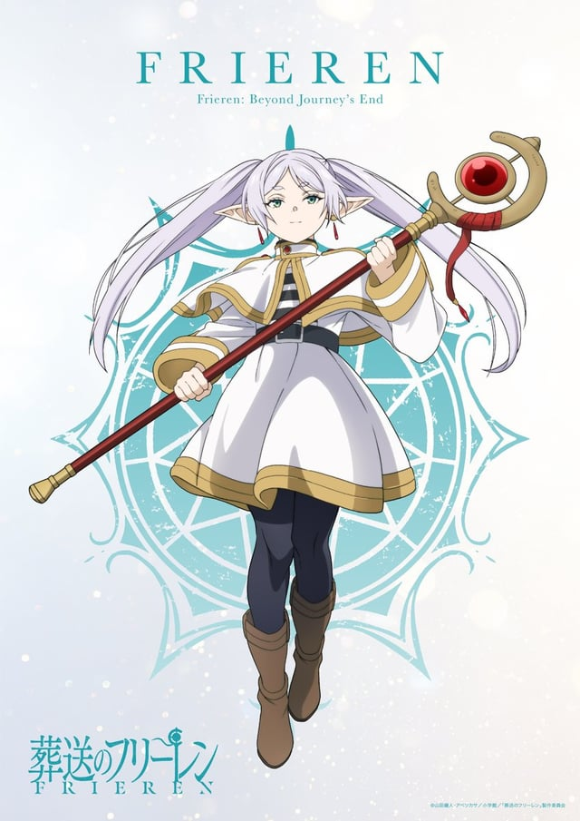
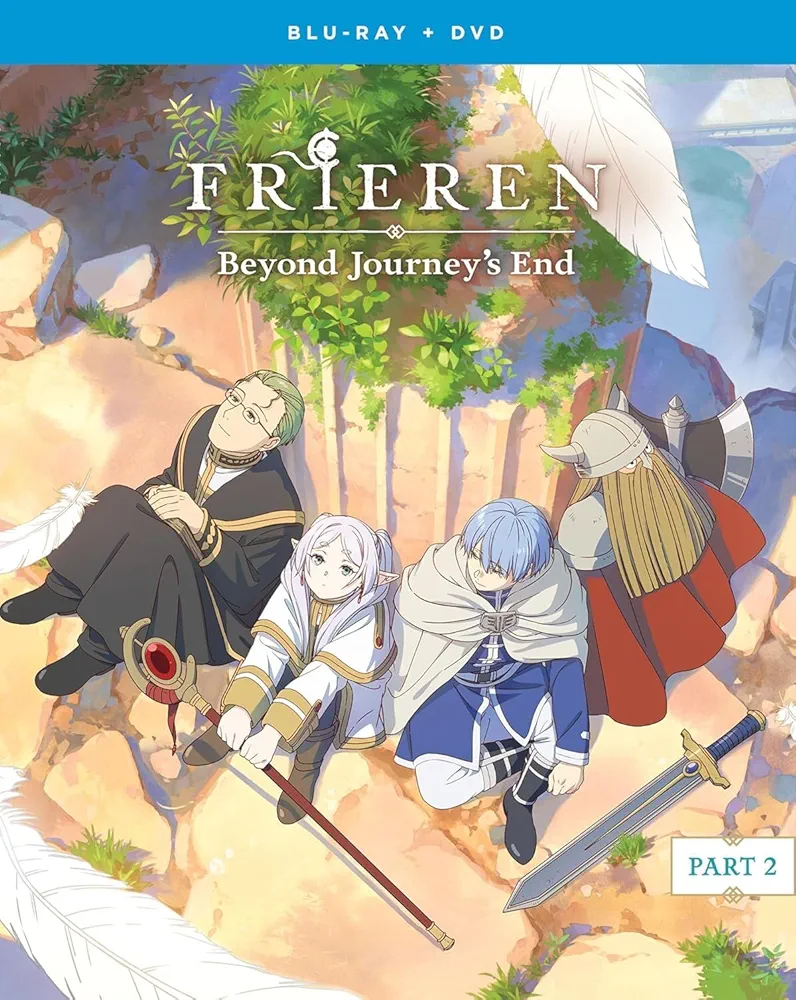
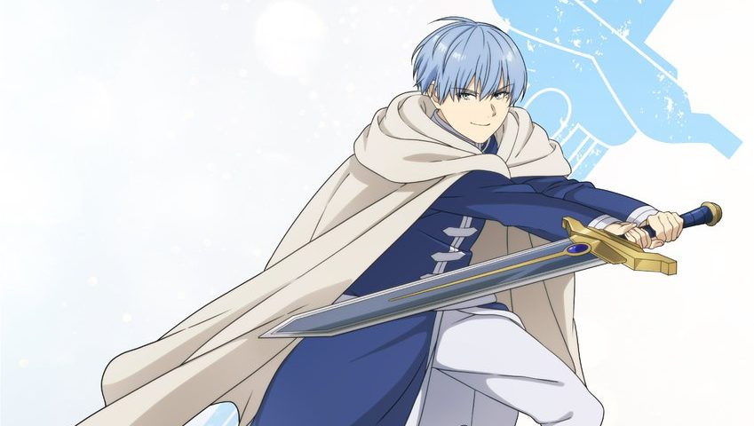
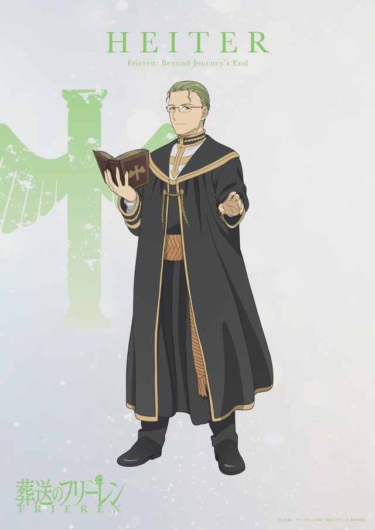
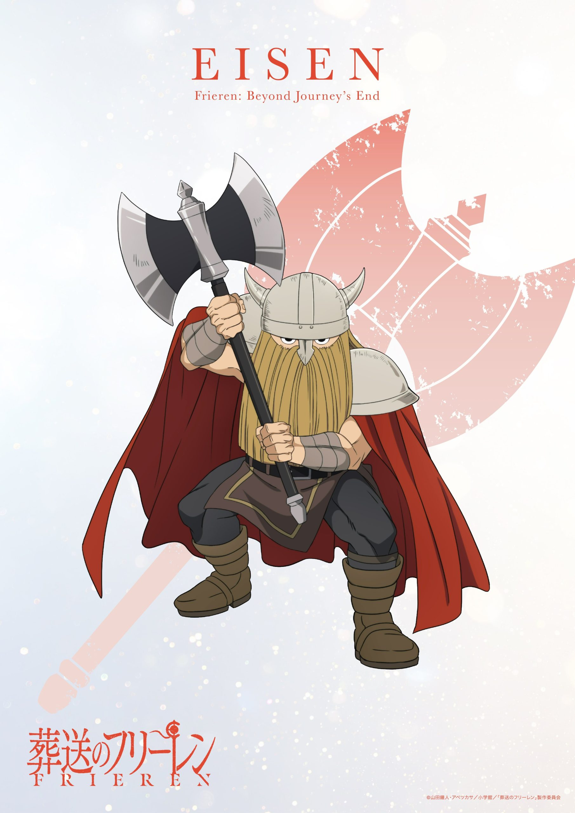
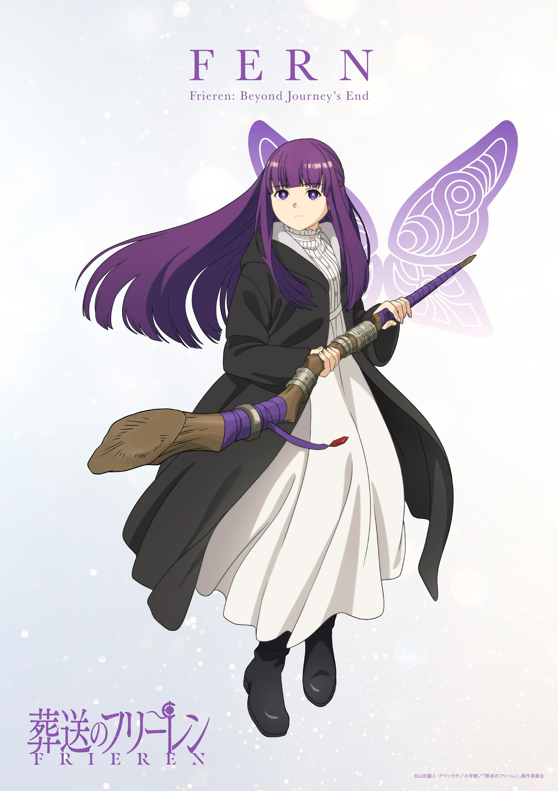

<!DOCTYPE html>
<html lang="en">
<head>
    <meta charset="UTF-8">
    <meta name="viewport" content="width=device-width, initial-scale=1.0">
    <title>Pagina de Anime</title>
    <link rel="stylesheet" href="../css/estilo.css">
</head>
<body>
</html>
    <div class="padre">
        <header>
            <table>
                <tr>
                    <td><div class="logo"> </div></td>
                    <td><div class="titulo">Frieren</div></td>
                </tr>
            </table>
        </header>
        <nav>
            <table>
                <tr>
                    <td><div class="caja"><a href="../index.html">Inicio</a></div></td>
                    <td><div class="caja"><a href="../pag/Demon_Slayer.html">Demon Slayer</a></div></td>
                    <td><div class="caja"><a href="#">Frieren</a></div></td>
                    <td><div class="caja"><a href="../pag/Solo_Leveling.html">Solo Leveling</a></div></td>
                    <td><div class="caja"><a href="../pag/Tobe_HeroX.html">Tobe Hero X</a></div></td>
                    <td><div class="caja"><a href="../pag/Your_Name.html">Your Name</a></div></td>
                    <td><div class="caja"><a href="../pag/Contacto.html">Contacto</a></div></td>
                </tr>
            </table>
        </nav>
        <section>
            <h1 class="sub">Frieren: Beyond Journey's End</h1>
            
            <p class="texto">Frieren: Beyond Journey's End (Sōsō no Frieren) es una serie muy distinta a la mayoría de los animes de fantasía. Mientras que casi todos se centran en la gran batalla para salvar al mundo, esta historia empieza después de que el mundo ya ha sido salvado.
                Aquí tienes el desglose de la trama y sus personajes:</p>
            <h2 class="tex">Trama</h2>
            <p class="texto">La historia sigue a Frieren, una maga elfa que formó parte del grupo de héroes que derrotó al Rey Demonio tras una búsqueda de 10 años. Sin embargo, para una elfa que vive miles de años, esa década fue apenas un abrir y cerrar de ojos.
                Después de que el grupo se separa, Frieren regresa 50 años después para encontrar a sus amigos envejecidos, y eventualmente presencia la muerte del héroe, Himmel. Esto le genera una profunda crisis existencial: se da cuenta de que, aunque pasó años con ellos, no sabía nada sobre la humanidad debido a su percepción distorsionada del tiempo. El anime trata sobre su nuevo viaje para "conocer a los humanos" y entender el peso de los vínculos que dejó pasar.</p>
                <h2 class="tex">Protagonista</h2>
                <h3 class="tex">Frieren</h3>
                
                <p class="texto">Una elfa maga con una actitud aparentemente fría, pragmática y desapegada. Le cuesta entender las emociones humanas y no tiene sentido de la urgencia (puede pasar meses investigando un solo hechizo).
                    Su arco es de introspección; aprende que los pequeños momentos que consideraba insignificantes eran, en realidad, lo más valioso de su vida.
                </p>
                <h2 class="tex">Grupo Original (El Legado)</h2>
                
                <p class="texto">El grupo original de héroes que derrotó al Rey Demonio estaba compuesto
                <h3 class="tex">Himmel el Heroe</h3>
                
                <p class="texto">El héroe humano del grupo, un joven valiente y optimista. Su muerte es el catalizador de la historia, ya que hace que Frieren se cuestione su propia existencia y el significado de sus relaciones con los demás.
                    Un hombre un tanto narcisista pero con un corazón de oro puro. Sus acciones y frases motivadoras son las que Frieren intenta descifrar durante todo su viaje. Estaba profundamente enamorado de Frieren, aunque ella no se dio cuenta a tiempo.</p>
                <h3 class="tex">Heiter el Sacerdote</h3>
                
                <p class="texto">Un sacerdote humano que se unió al grupo para apoyar a Himmel. Es un personaje amable, sabio y con una fe inquebrantable. Su muerte también impacta a Frieren, aunque de manera diferente a la de Himmel, ya que Heiter representaba la espiritualidad y la esperanza.
                    Un clérigo que amaba el alcohol pero era un sabio consejero. Él es quien "obliga" a Frieren a llevarse a Fern para que la elfa no se quede sola tras su muerte.</p>
                <h3 class="tex">Eisen el Guerrero</h3>
                
                <p class="texto">Un guerrero humano que se unió al grupo por lealtad a Himmel. Es un personaje fuerte, valiente y con un gran sentido del deber. Su muerte representa la pérdida de la fuerza física y la protección, lo que hace que Frieren se sienta aún más vulnerable.
                    Un soldado disciplinado pero con un gran corazón. Su muerte es la más trágica para Frieren, ya que él era el más cercano a ella en términos de personalidad y valores.
                    Un enano de constitución robusta que aún vive. Es quien le pide a Frieren que busque el lugar donde descansan las almas para que ella pueda hablar con Himmel una última vez.</p>
                <h2 class="tex">Grupo Actual de Frieren</h2>
                
                <p class="texto">Después de la muerte de sus amigos, Frieren se une a un nuevo grupo de aventureros para seguir explorando el mundo y aprender sobre la humanidad. Este grupo incluye a Fern, una joven maga humana que admira a Frieren, y a Stark, un guerrero humano que se convierte en su nuevo compañero de viaje.
                    A través de sus nuevas aventuras, Frieren comienza a comprender el valor de las relaciones humanas y el significado de la vida más allá de la simple existencia. El anime es una reflexión profunda sobre el tiempo, la memoria y lo que realmente importa en la vida.</p>
                <h2 class="tex">Fern</h2>
                
                <p class="texto">Una joven huérfana adoptada por Heiter (el sacerdote del grupo original) y entrenada por Frieren. Es la voz de la razón y quien gestiona la vida cotidiana, ya que Frieren es bastante descuidada.
                    Una maga prodigio. A diferencia de Frieren, Fern valora cada segundo porque sabe que su vida es corta. Su estilo de combate es increíblemente rápido y eficiente, centrándose en ataques básicos lanzados con precisión matemática.
                    Representa la herencia y el paso del tiempo. Es la prueba viviente del crecimiento humano frente a la longevidad elfa.
                </p>
                <h2 class="tex">Stark</h2>
                
                <p class="texto">El guerrero del grupo, discípulo de Eisen (el enano del grupo original). A pesar de tener una fuerza física descomunal y una resistencia asombrosa, es un joven muy miedoso y con poca confianza en sí mismo.
                    Aporta el factor humano y vulnerable. Su entrenamiento se basó en la perseverancia y en superar el terror paralizante antes de cada batalla.
                </p>  
            </p>
        </section>
        <footer>
            <h5>Diseñado por: Nehemias Corine Abalos - UMSA,2026</h5>
        </footer>
    </div>
</body>
</html>